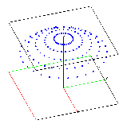

Example 3: creatpts in a spherical geometryThe objective is to add points to a spherical mesh using the createpts command.
A spherical geometry is defined. The createpts/rtp command is used to create a point
distribution within the sphere. The output consists of one gmv file.Input
Images of GMV output
 spherical geometry